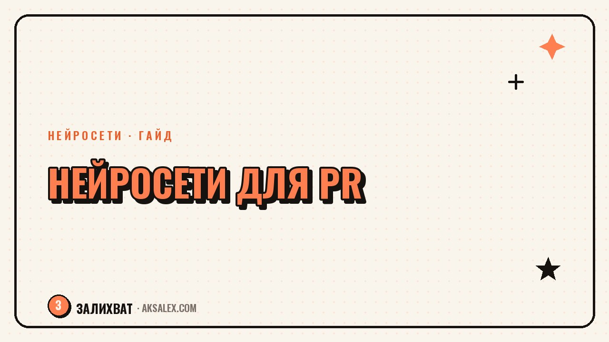

Нейросети для PR-специалиста: пресс-релизы и СМИ

У PR-специалиста редко бывает один рабочий день похожий на другой: утром релиз, днём питчинг журналиста, вечером мониторинг упоминаний бренда. Нейросети не заменят стратегию и отношения с редакциями, но забирают черновую работу: собрать первый вариант текста, разобрать массив публикаций, подготовить спикера к интервью. Разберём, где они реально экономят время и на что не стоит их перекладывать.
Что нейросети реально закрывают в работе PR-специалиста
PR-работа состоит из текстов, людей и скорости реакции. Нейросеть сильна там, где нужно быстро собрать черновик, структурировать информацию или разобрать большой объём данных. Она слабее там, где решение зависит от репутации, личных контактов с редакцией или понимания контекста компании, которого нет в открытых источниках.
Где начинать, если раньше не пробовал
- Возьми один повторяющийся тип задачи: релизы, дайджест упоминаний или ответы на запросы журналистов.
- Загрузи в нейросеть бриф или факты компании и попроси структуру текста, а не готовый материал.
- Отредактируй результат под голос бренда - это обычно быстрее, чем писать с нуля.
Пресс-релизы и питчи журналистам с нейросетью
Пресс-релиз - текст с жёсткой структурой: заголовок, лид с главным фактом, цитата спикера, бэкграунд компании. Нейросеть хорошо держит такую структуру, если дать ей факты в сыром виде: дату, цифры, суть новости, пару тезисов спикера. Она соберёт связный черновик за пару минут, а твоя задача - проверить точность цифр и убрать канцелярит, который нейросети любят добавлять.
С питчами журналистам сложнее: нейросеть не знает, какой редактор уже писал похожую тему месяц назад. Но она может сократить длинный релиз до трёх строк питча под конкретное издание, если указать формат и аудиторию медиа. Попроси сделать три варианта с разным углом подачи одной новости - это быстрее, чем придумывать их с чистого листа.
Нейросеть не продаёт историю журналисту - она помогает быстрее перебрать углы подачи, прежде чем ты выберешь, какой из них отправить.
Чек-лист перед отправкой релиза
- Все цифры и факты сверены с первоисточником, а не взяты из догадки нейросети.
- Цитата спикера звучит как реальная речь, а не обобщённая фраза из учебника по PR.
- Заголовок отражает суть новости, а не штамп вроде «революционное решение».
Мониторинг упоминаний и работа с кризисами
Ручной мониторинг упоминаний бренда в соцсетях и СМИ занимает часы, особенно если компания заметная. Нейросети умеют суммировать большие объёмы текста: выгрузи упоминания за день и попроси выделить тональность, повторяющиеся темы и резонансные посты. Это не заменит специализированный сервис мониторинга, но закрывает быстрый обзор без подписки на дорогой инструмент.
В кризисной ситуации скорость решает больше, чем красота текста. Нейросеть полезна как второй мозг под рукой: ты накидываешь факты, а она быстро собирает черновик заявления или ответа на комментарий. Финальное решение - публиковать или нет - всегда остаётся за человеком и, как правило, за юристом, если ситуация серьёзная.
Что нельзя отдавать нейросети в кризисе
- Окончательную формулировку позиции компании - её утверждает руководство, а не алгоритм.
- Оценку юридических рисков заявления - это зона юриста, не текстового сервиса.
- Любые факты, которые нейросеть не проверяла - она может уверенно написать то, чего не было.
Контент для соцсетей и подготовка спикеров
Кроме релизов PR-специалист часто пишет посты для соцсетей компании и тезисы для выступлений руководителя перед интервью. Нейросеть удобна для подготовки спикера: загрузи тему интервью и попроси собрать список вероятных вопросов журналиста с короткими заготовками ответов. Спикер приходит на эфир не с чистого листа, а с ориентирами, которые можно развить своими словами.
Какую нейросеть выбрать для PR-задач
Универсального решения нет - разные сервисы удобны для разных частей работы. Вот сравнение по тем задачам, с которыми PR-специалист сталкивается чаще всего.
| Задача | Что подойдёт | Нюанс |
|---|---|---|
| Черновик релиза по фактам | Чат-нейросеть общего назначения | Нужен подробный бриф, иначе текст выйдет общим |
| Сокращение релиза в питч | Та же нейросеть с чётким форматом запроса | Указывай аудиторию и объём - по символам или строкам |
| Суммаризация упоминаний | Нейросеть с большим окном ввода текста | Загружай упоминания пачками, не всё сразу |
| Тезисы для спикера | Диалоговая нейросеть с уточняющими вопросами | Проговори реальный контекст компании, а не только тему |
| Перевод релиза на другой язык | Нейросеть с хорошим переводом, не автопереводчик | Всегда проверяй носителем языка перед отправкой |
Типичные ошибки и что нейросеть не заменит
Самая частая ошибка - отправлять журналисту текст прямо из нейросети без редактуры. Такой релиз легко узнать по канцеляриту и обтекаемым фразам, а редакторы это считывают быстро. Вторая ошибка - просить нейросеть придумать факты, цифры или цитаты, которых не было. Она сделает это уверенно и гладко, а проверять правду придётся тебе, возможно уже после публикации.
Нейросеть не заменит главное в профессии - отношения с журналистами, понимание, кому из редакции интересна новость, и репутацию, которая строится годами. Она ускоряет текстовую рутину, но решения о тоне в кризисе и выборе, с кем говорить первым, остаются человеческими.
Частые вопросы
Можно ли полностью доверить нейросети написание пресс-релиза?
Черновик - да, финальный текст - нет. Нейросеть соберёт структуру по фактам, но цифры и цитаты нужно проверять самому, иначе в релиз попадут неточности.
Какая нейросеть лучше подходит для мониторинга упоминаний бренда
Специализированные сервисы считают охваты и тональность точнее. Но для быстрого обзора за день чат-нейросеть с большим окном ввода текста тоже справляется: суммирует упоминания и выделит темы.
Как нейросеть помогает готовиться к кризисным коммуникациям?
Она быстро собирает черновик заявления по фактам, которые ты даёшь. Это экономит минуты, критичные в кризисе, но решение о публикации всегда проверяют руководство и юрист.
Заменит ли нейросеть PR-специалиста?
Нет, профессия держится на отношениях с журналистами и стратегических решениях, которые алгоритм не принимает. Нейросеть забирает рутину - черновики текстов, а не работу с людьми.
Нужно ли указывать журналистам, что релиз написан с помощью нейросети?
Отдельно сообщать не обязательно, если текст проверен и отражает реальные факты. Важнее не сам инструмент, а точность итогового релиза.
Раз тема оказалась полезной, вот что почитать следующим. Блог на VC.ru с нейросетями: форматы, подготовка текста и первые шаги новичка.
Читать статью →а не вручную